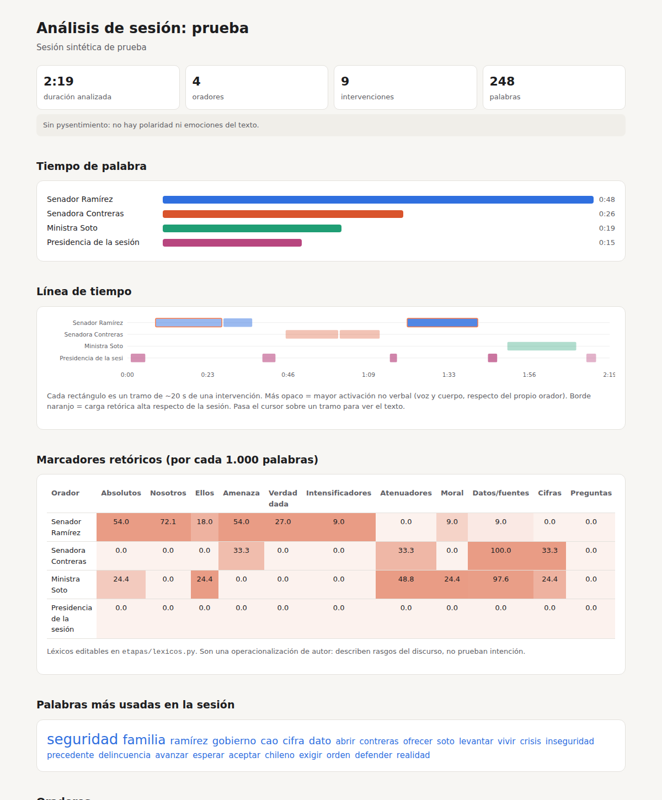

Análisis verbal y no verbal de sesiones
Pipeline en Python que toma la grabación de una sesión (Senado TV, YouTube o un video local) y entrega quién habla, qué dice, qué repite y cómo se expresa con el rostro, el cuerpo y la voz.
Registro 001
Qué entrega
- Transcripción por orador, con nombre y marcas de tiempo.
- Análisis verbal: tiempo de palabra, palabras más repetidas, palabras distintivas de cada orador (keyness), frases que cada uno repite (“consignas”), marcadores retóricos y sentimiento del texto.
- Análisis no verbal: rostro (blendshapes de MediaPipe resumidos en índices legibles), orientación y movimiento de la cabeza, energía gestual de las manos, y voz (tono, volumen, velocidad y pausas).
- Línea de tiempo en tramos de ~20 s, en CSV.
- Reporte HTML que se abre con doble clic.
La exportación a imágenes generativas todavía no está incluida: esta versión llega hasta los datos, que después se pueden conectar a ComfyUI o a MQTT.
Registro 002
Ejemplo

Registro 003
Etapas
ingestaDescarga y extracción de audio y video con ffmpeg.transcripcionfaster-whisper con marcas de tiempo por palabra.diarizacionpyannote separa quién habla; turnos y ventanas de ~20 s.oradoresSugiere nombres a partir de frases como “Tiene la palabra el senador X”; se corrigen enoradores.csv.verbalFrecuencias, keyness, consignas, marcadores retóricos y sentimiento.no_verbalMediaPipe: rostro y pose.prosodiaVoz con Praat (parselmouth).linea_tiempoFusión de todo y puntajes z por orador.reporteReporte HTML.
Registro 004
Uso
Corre en el computador (Python 3.10–3.12 + ffmpeg). Instrucciones completas de instalación, token de Hugging Face y tiempos aproximados en el README.
git clone https://github.com/matias-pezoa/mcd-computacion-avanzada.git cd mcd-computacion-avanzada/analisis_sesion pip install -r requirements.txt python -m spacy download es_core_news_md python pipeline.py --sesion prueba --fuente "https://www.youtube.com/watch?v=XXXX" --desde 0:20:00 --hasta 0:30:00
Registro 005
Limitaciones
- Planos de TV. El rostro en pantalla no siempre es el de quien habla; cada tramo indica si el rostro visible parece estar hablando, para filtrar.
- Rostro no es emoción. Los blendshapes describen movimientos musculares observables; inferir emociones a partir de la cara es un tema científicamente discutido (Barrett et al., 2019).
- Índices exploratorios. Carga retórica, activación vocal y corporal, y desfase verbal/no verbal son propuestas de lectura, no mediciones validadas.
- Datos personales. Aunque las sesiones son públicas, se procesan datos biométricos (rostro y voz) de personas identificables (Ley 21.719).
- Estado. Probado con una sesión sintética; Whisper, pyannote y MediaPipe aún deben probarse con una sesión real.
Registro 006
Código